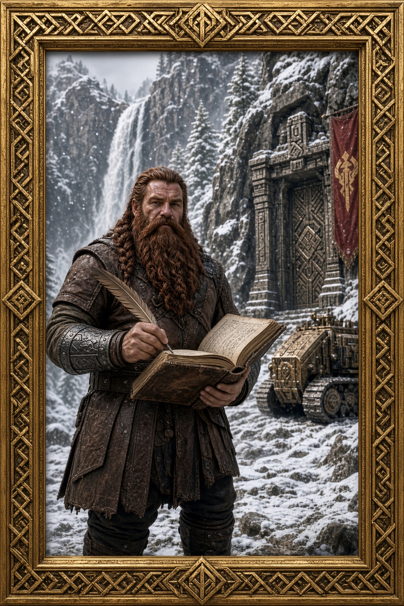

Bram · Daily Journal
Ledger and Quill
Accounts of the road, the mountain, and the work that pays

The framed portrait of Bram, dwarf adventurer and factor, standing in the high snow with his ledger open and quill in hand.
November 2026
Journal entries forthcoming. The mountain is quiet today. The ink is fresh.